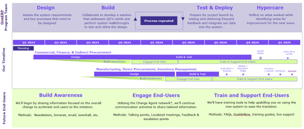
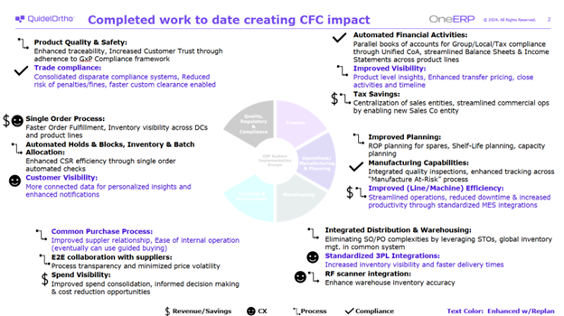

Driving Enterprise Transformation through Data-Driven Product Management
In 2022, Quidel Corporation and Ortho Clinical Diagnostics merged to form QuidelOrtho, creating a powerhouse in the diagnostics and healthcare industry. QuidelOrtho is one of the world's largest in vitro diagnostics (IVD) providers, with a rich heritage of over 120 years of collective experience and innovation. Headquartered in San Diego, California, QuidelOrtho operates in more than 130 countries and territories, providing critical diagnostic solutions at scale.
With a workforce of approximately 6,000 employees, QuidelOrtho reported a revenue of $2.8 billion for the full year 2024. The company's operations span across various segments, including immunoassay and molecular testing, clinical chemistry, transfusion medicine, and point-of-care diagnostics. Despite its impressive scale and reach, QuidelOrtho faced significant operational challenges following the merger, leading to a decline in revenue and net loss for the full year 2023.
The Journey Begins
Following the merger, QuidelOrtho encountered several operational challenges that hindered its ability to deliver seamless and efficient services. The integration of the two companies resulted in:
- Manual Processes: Many tasks, such as spare parts planning and order picking, were done manually, leading to inefficiencies and errors (impacting Operations/Manufacturing & Planning).
- Inconsistent Systems: Different regions and departments used various systems and processes, causing data silos and lack of visibility (impacting all departments).
- Fragmented Spending: Spending was spread across multiple channels without a unified approach, making it difficult to track and manage expenses (impacting Finance and Sourcing & Procurement).
- Complex Order Management: Conflicting business rules and manual handling of orders and billing slowed down processes and affected customer satisfaction (impacting Commercial and Warehousing).
- Inefficient Financial Reporting: Financial processes were manual and decentralized, leading to delays and inaccuracies in reporting (impacting Finance).
- Lack of Transparency: Payment statuses and intercompany settlements were not transparent, and cash forecasting was inefficient (impacting Finance).
- Complicated Tax Processes: Tax code selection and reporting were manual and complex, leading to potential errors and compliance issues (impacting Finance and Quality, Regulatory & Compliance).
These issues led to inefficiencies, data silos, and inconsistent processes across various departments, ultimately contributing to a decline in revenue and net loss for the full year 2023.
A Critical Blockage
The situation reached a critical point when a major product release, the Savanna® Respiratory Viral Panel-4 (RVP4) test, was blocked due to operational inefficiencies. This blockage highlighted the urgent need to investigate and address the underlying issues that were hampering the company's ability to operate effectively and deliver products to market.
Exploring Solutions
Recognizing the need for a transformative solution, QuidelOrtho began exploring how other industry leaders in diagnostics and healthcare had successfully leveraged SAP S/4HANA to overcome similar challenges. They learned from peers who implemented SAP S/4HANA to improve real-time visibility into finance and operations, streamline processes, and enhance decision-making capabilities. This inspired QuidelOrtho to consider a similar approach to unify and optimize their operations.
Crafting the Solution
- Assessment and Planning: QuidelOrtho conducted a thorough assessment of existing systems, processes, and data flows. They identified key pain points and areas for improvement, developing a comprehensive transformation roadmap with clear milestones and timelines. The assessment phase involved 130+ workshops with 150+ stakeholders to explore leading practices in SAP and identify key pain points and improvement opportunities.
- Stakeholder Engagement: Engaging key stakeholders from various departments was crucial to ensure alignment and buy-in for the OneERP initiative. A cross-functional team was established to oversee the implementation and address any concerns or challenges that arose. Leadership presence, prioritization, and selecting the right team based on expertise and change-readiness were emphasized.
- System Selection and Customization: QuidelOrtho selected SAP S/4HANA as the robust ERP platform that met their specific needs. The system was customized to align with the company's unique processes and requirements, ensuring seamless integration with existing tools and technologies. The project methodology supported interactive sessions, cross-functional teams, and continuous improvement.
- Data Migration and Cleansing: Data from legacy systems (LN 10.2, LN 10.5, JDE, SAP FIT, and SAP Mars) was migrated to the new ERP platform. Data cleansing was performed to ensure accuracy and consistency, and data governance practices were implemented to maintain data quality over time. Detailed design workshops reviewed standard S/4 functionality and gathered business requirements.
- Training and Change Management: A comprehensive training program was developed to equip employees with the skills and knowledge needed to effectively use the new ERP system. Change management strategies were implemented to facilitate a smooth transition and minimize disruption. The focus was on both learning and engagement to promote adoption of desired behaviors.
- Continuous Improvement: A framework for continuous monitoring and improvement of the ERP system was established. Feedback from users was gathered, and necessary adjustments were made to optimize performance and address emerging needs. Continuous improvement was a key principle in the project methodology.
Realizing the Benefits
OneERP will streamline and integrate core business processes—such as finance, manufacturing, planning, warehousing, sourcing and procurement, commercial, quality and regulatory compliance—into one efficient platform called SAP S/4HANA.
This transformation consolidates five of our existing systems—LN 10.2, LN 10.5, JDE, SAP FIT, and SAP Mars—into a single, unified platform that provides real-time data, simplified processes and advanced tools. It equips us to deliver greater value to patients and clinicians worldwide while globalizing our processes where possible.
The transformative impact of OneERP:
- Integration across distribution and warehousing: Warehouses at all sites will begin leveraging Stock Transfer Orders (STOs) to simplify material movements between locations, enabling global inventory management within a single system.
- Enhanced planning and manufacturing processes: Innovations like Reorder Point (ROP) Planning for Spares, Shelf-Life Planning, and built-in quality inspections will optimize operations, reduce manual scheduling and enhance reliability.
- Improved financial and analytical insights: Automation of financial activities, such as invoice processing with Optical Character Recognition (OCR), will drive efficiency and free up time for strategic activities. Real-time visibility into payment statuses and streamlined intercompany settlements. Automated tax code determination and reporting to ensure compliance and reduce errors.
- Streamlined order management: Automation of key functionalities such as lot allocation and holds and blocks will result in fewer manual touches. Harmonized order-to-cash processes will reduce handoffs, strengthen collaboration, and accelerate processing for greater efficiency. Enhanced customer notifications for clear and transparent communications regarding order, shipment and invoice status(es).
OneERP will impact many teams across QuidelOrtho, paving the way for future growth and success. Due to the size and scope of this global program, we’ve split the transitions to the new system into four different phases, known as ‘Releases’, for staggered system go lives:
- Release 1 – Oct 2024: All U.S. LN users at Athens, Rutherford and Waples, plus global teams supporting Supply Chain, Operations, Commercial and Finance
- Release 2 – May 2025: All JDE and SAP FIT users in North America and LATAM
- Release 3 – February 2026: EMEA
- Release 4 – April 2026: Greater China, JAPAC
Training and Communication
Comprehensive training sessions were provided to all employees affected by the OneERP changes. These sessions ensured that employees had the knowledge and confidence to navigate the new system effectively. Additional information was shared regularly regarding the changes and their impact on daily work. Employees were encouraged to visit the OneERP Connect SharePoint for more information or to share questions and feedback. Emphasis was placed on comprehensive training sessions and continuous communication to ensure successful adoption.